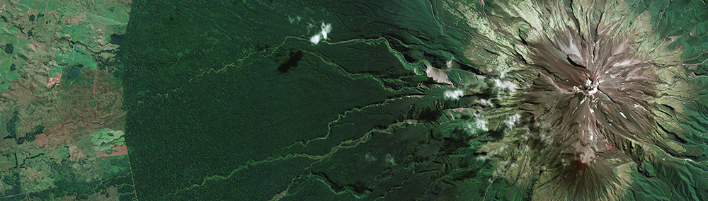

Crisis often leads to innovations that were already available but unexploited. By relying on online technologies such as Zoom, we currently have an incredible ability to scale up academic and policy-oriented workshops at minimal cost, allowing for broader participation, increased inclusion, and a greater diversity of voices.
To receive information about our events and/or to submit to present, please register here.
GoSee workshops will initially take place twice a month at a time that facilitates participation from scholars around the world. Each workshop will have a focused theme with a goal of fostering detailed discussion and promoting subsequent collaborations.
Image credits: ESA/Copernicus/Sentinel-2, CC BY-SA 3.0 IGO
The first workshop will take place 22 April 2020 at 7am PST to mark Earth Day.
The theme of the first workshop will be What are environmental and resource economists doing to inform solutions to COVID-19?
Image credits: ESA/Copernicus/Sentinel-2, CC BY-SA 3.0 IGO
Each GoSee workshop will last two hours and will typically feature four papers (15 minutes, each), discussants (5 minutes each), and additional Q&A with the audience. We will also consider shorter presentations (5 minutes) without discussants, for projects that are at initial stages. Papers for 15-minute presentations should be developed enough for a presentation that stresses data, methods, results, or solutions that can easily be implemented on the ground. Some workshops will have more of a roundtable format, with presentations by policymakers, NGOs or private sector on research needs.
Each workshop will be recorded and posted on here. We will develop a discussion board for additional questions and comments
Image credits: ESA/Copernicus/Sentinel-2, CC BY-SA 3.0 IGO
A unique feature of GoSee is that everybody will have a chance to present. Of course, what you want to know is when. The role of those putting the workshops together is to identify groups of 4 papers that fit together around specific themes while maximizing global representation.
Given the structure of GoSee workshops, we will accept submissions on a rolling basis, starting Friday, April 3rd. Authors can submit individual papers or complete proposals for workshops. Proposals for workshops will typically require that papers come from a diverse group of participants (not just the usual suspects).
While this list is far from complete, to facilitate the rapid organization of workshops for April and May, we are particularly interested in submissions from scholars working in the following areas:
Image credits: ESA/Copernicus/Sentinel-2, CC BY-SA 3.0 IGO